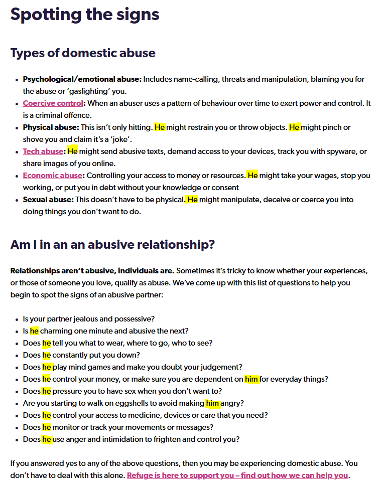

From Factory Floors to Front Desks:
Gender Roles in a Post-Industrial Era
Britons have long viewed the Thatcher years as a dark period for the country's industrial economy. The 1970s saw significant job losses in key industries such as coal mining, shipbuilding, metalworking, and textiles, which had once formed the backbone of the working-class population. Combined, these industries made up 45.2% of employment in Scotland in 1959 and maintained a strong share of the economy by 1996, holding almost a quarter (21.5%) of Scottish employment , despite the deindustrialisation of Scotland’s major industries. However, the process of Scotland’s deindustrialisation didn’t start or end with Thatcher; the evolution from industrial work to a service economy and standardised manufacturing was long-running, complex, and had broad social and generational consequences.
The identity of many men and women has been tied to the roles and consequent expectations society holds and the people surrounding them reinforce. This applies no differently to the working forces of the 1950s than it does to us today. However, the roles and expectations have been subject to many changes in that time, with the most predominant force being the push for equality, as women and men demand greater rights, opportunities, and respect. During this period, societal expectations and roles were evolving, particularly regarding gender. Women had proven their industrial capability by propping up British industries and sustaining the armed forces in World War I and again in World War II. Yet traditional roles continued to prevail, with men expected to be the primary providers and women focused on the home.
The balance of labor in favor of men or women can be interpreted differently depending on the angle at which you stand, but both clearly miss important elements in achieving greater parity that, ironically, the other already had.
Equality & Opportunity
Scotland’s evolving employment landscape from industrial to a service- and technology-based economy meant both men and women were facing new opportunities, as well as job loss. New industries were being developed and invested in, such as engineering, electronics, consumer goods, other manufacturing industries, and the public sector. Thus, many men and women moved from unemployment or a declining industry to new work. However, the distribution of opportunities varied and has since revealed a gendered pattern in how Scottish men and women adapted to shifting market demands.
The Men
For much of the 19th and 20th centuries, Scotland’s economy revolved around heavy industries, which were predominantly male-dominated and provided secure, well-paying jobs for generations of working-class men. However, the closure of factories, mines, and shipyards devastated industrial communities like Glasgow, Fife, and Ayrshire - industrial strongholds of Scotland. Unemployment soared, leaving men grappling with a loss of financial stability, identity, and purpose.
This period saw the erosion of a cultural ideal tied to male identity - the breadwinner model, pride in physical labour, and camaraderie among peers . Many young men expected to follow in their fathers’ footsteps, pursuing secure, generational work in heavy industries. Instead, they faced a rapidly shifting job market requiring technical skills and offering lower-paying, less stable roles in part-time or shift work. Older men were disproportionately affected by unemployment, as a large proportion of displaced industrial workers were over the age of 50 and couldn’t find other work . The collapse in income meant many men couldn’t afford to socialise in the pub or over football, and the gentrification and rehousing of families loosened community bonds even further.
The psychological and health impacts of deindustrialisation were severe, with increasing rates of heart disease, rates of alcoholism, and suicides , reflecting the toll on displaced workers. Under the Thatcher government in the 1980s, deindustrialisation accelerated, leaving many men alienated and contributing to Scotland’s high rate of “permanently sick” unemployment .
The Women
Whilst men bore the brunt of job losses, the fallout of deindustrialisation was much more complex but no less consequential for women. Women’s activity in the labor market actually increased in many industrial sectors, despite the industry’s overall downturn, and accounted for one-fifth of the food, drink, and tobacco sector from 1959 to 1977. The textiles industry was the primary industrial employment sector for Scottish women and remained so until 1968 . On the other hand, as deindustrialisation became more drastic, service-based industries grew, including healthcare, education, retail, and administrative roles, which were considered ‘feminine’ work and thus tended to be dominated by women. And whilst part-time and shift work allowed women to balance expectations these jobs were often lower-paid and had limited career progression compared to industrial work.
Women also made great strides in furthering equality, since more part-time and shift work became available more women could balance the societal expectation to be the family carer with gaining more financial security and independence. Unions were inundated with women looking to improve their workplace and employment rights, leading to the eventual enhancement... However, nursery provision and the right to maternity were recurrently ignored, denied and left unfulfilled until 1975, under the Employment Protection Act.
Despite all this, women successfully started and continued to carve out a growing presence in the workforce, challenged traditional gender roles and societal expectations of what women can or can’t do, and paved the way for further societal changes, including increased education.
Missing Pieces
By the end of the early 21st century, Scotland had firmly established itself as a service-oriented economy, much like the rest of the UK, with growth in technology and financial sectors. Although many of these new positions were unevenly distributed by geography and gender, with urban centres like Edinburgh and Glasgow becoming national hubs, rural and post-industrial areas were left struggling to attract investment or new jobs.
Men struggled to adapt to the shifting economy, entrenched in the industrial culture and generationally inherited work, which led to them often lacking the skills or qualifications the services or technology industries demanded of them. And whilst women had been historically excluded and denied financial independence, they were better positioned to seize the opportunities these new sectors offered, leading to a steady narrowing of the gender pay gap. Since then, conversations surrounding gender roles and equality have increasingly dominated public discourse.
The reshaping of the traditional nuclear household has been one of the most profound societal shifts in recent decades. Women, who had long fought for better employment opportunities, wages, and workplace provisions, made significant strides during deindustrialization. These achievements challenged entrenched societal norms and expectations of women’s roles as primary caregivers. Maternity leave became a guaranteed right, ensuring mothers had time to recover and bond with their newborns. However, fathers have had to continue their fight for adequate paternity leave, seeking time to bond with their children and support their partners during postpartum recovery.
The 21st century has seen a rise in awareness of this fact, with demonstrations demanding better paternity leave from The Dad Shift. They point out that Dads and other co-parents in the UK have the worst paternity leave in Europe - only two weeks - and argue that more substantial, affordable, and equal paternity leave means Dads can better support their partner and bond with their kids without taking leave from mums. Shared parental leave is also currently unaffordable for many families, leaving less than 2% of families using it and just 100 people in the lowest third of earners in the UK took it in 2023. The Dad Shift argues better paternity is also better for mums, reducing the gender pay gap and rates of postpartum depression, and kids, with Dad’s greater presence improving children’s wellbeing and performance in school.
Expanding paternity leave and normalising shared parenting responsibilities could be transformative, promoting greater equality and alleviating pressures on men and women alike. Greater involvement from fathers in caregiving allows mothers to return to work sooner if desired, helps fathers build stronger bonds with their children, and challenges traditional gender stereotypes. For society to continue evolving, support for men must grow alongside efforts to empower women, ensuring that both genders can thrive in a rapidly changing world.
Unacknowledged and Overlooked:
The Struggles of Male Domestic Violence Victims
Domestic violence is a pervasive issue that affects individuals regardless of gender, age, or socioeconomic background. The COVID-19 pandemic exacerbated this crisis, with lockdowns forcing victims into prolonged isolation with their abusers. Reports of domestic violence surged, yet much of the public discourse remained focused on women and children as survivors, leaving male survivors largely unacknowledged. Social expectations surrounding masculinity often discourage men from seeking help, further compounding the problem.
The history of domestic violence awareness has been shaped by decades of advocacy for women and children. In the 1970s, feminist movements brought attention to the prevalence of abuse against women, leading to the establishment of shelters, support services, and legal reforms. Organisations like Refuge in England were instrumental in creating safe spaces for women and children escaping violence. While this progress has been vital, it has inadvertently overshadowed the experiences of male survivors.
Representation for Survivors
Societal stereotypes about masculinity often lead to disbelief or minimisation of men’s experiences. Male survivors of domestic abuse and violence often face unique challenges, including stigma, shame, and the perception that they should be physically capable of defending themselves. These barriers prevent many from reporting abuse or accessing support services.
England’s national domestic abuse helpline is run by Refuge , the largest specialist domestic abuse organisation in the UK. However, Refuge’s tagline is “For women and children. Against domestic violence.” and their website is female-oriented, with images of survivors being women and the language used referencing women and children as requiring help. There is next to no mention or images of male survivors, the only mention being a ‘useful link and number’ for the Men’s Advice Line, who specialise in supporting male survivors. As a designated national helpline for those seeking help, it is a failure to exclude or fail to include representation of male survivors or inclusive support.
Media coverage featuring stories on domestic abuse or violence in a wider context tends to again focus on female victims and survivors. For example, Queen Camilla’s recent ITV film addresses how domestic violence is a taboo subject, which she wishes to change. Whilst this notion is important to destigmatise survivors and help encourage victims to seek help, the language the Queen and media outlets use and the lack of gender neutrality in the topic’s discussion continue to contribute to a lack of representation for male survivors and victims.
This lack of representation in media and support services has far-reaching consequences. Male survivors may feel unwelcome, discouraged from seeking help, and isolated in their experiences. Language used by Refuge, such as “we exist to support women who are experiencing domestic abuse,” coupled with the use of male pronouns (he/him) to describe abusers, normalises the stereotype of men as perpetrators and women as victims. This narrative not only harms male survivors but can also marginalise women experiencing abuse from partners of other genders.
Emergency refuge accommodation is overwhelmingly designed for women and children, with only a handful of spaces dedicated to men across the UK. Scotland, for instance, has limited options for male-specific refuges, despite organisations like Abused Men In Scotland (AMIS) working tirelessly to fill this gap.
An Inclusive Approach
Addressing domestic violence is not a zero-sum game. Expanding support for male survivors does not detract from the vital work being done for women and children. Rather, it acknowledges that domestic violence affects all genders and ensures that everyone has access to the resources they need. Media representation must evolve to include male survivors, normalising their experiences and encouraging them to seek help. Language used by support organisations should be gender-inclusive, reflecting the diversity of domestic violence survivors.

Efforts must also focus on increasing refuge spaces for men, providing specialised counselling, and fostering public awareness of the unique challenges male survivors face. By doing so, society can begin to dismantle harmful stereotypes and ensure that no victim of domestic violence feels overlooked or unsupported.
Domestic violence is a societal issue that demands a comprehensive and inclusive response. Recognising and addressing the struggles of male survivors is not only a matter of justice but a crucial step toward ending the cycle of abuse for all.
Inclusive and Specialised Male Survivor Services:
If you are in immediate danger, please call 999.
IDAS - (North Yorkshire & Barnsley) 03000 110 110 or (Sheffield) 0808 808 2241, referrals, and live chat.
Men’s Advice Line - 0808 801 0327
Mankind - 0808 800 1170
Paul Lavelle Foundation - 0151 651 3777
AMIS (Scotland) - 03300 949 395
Galop (LGBTQ+) - 0800 999 5428